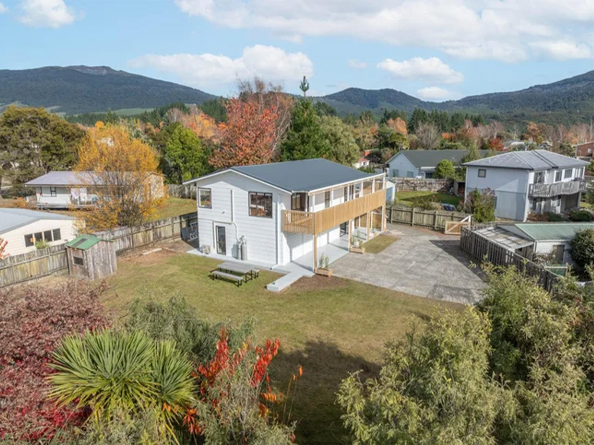

The retreat
What a few days here looks like.
Mornings are usually out and about. Afternoons are yours. Evenings are a proper feed and whoever's around.
No two retreats are the same. We build each one around who's coming and what they're after, whether that's a man who needs to reset or three mates who just want time in the bush. Nothing is compulsory either. Skip whatever you like.
What you can expect
The experience
Getting outside
Walks on the tracks nearby, through the trees and along the water. For most men this is the part that does the work.
On the water
Trout fishing on the Tongariro, and the thermal pools when you want to sit in hot water and do nothing.
Time to yourself
Nobody minds if you take a coffee and disappear for an afternoon. That is half the point.
Something to take home
A few practical ways of thinking that still make sense once you are back at work.
Talking, if you want it
Some of it Wade leads, most of it just happens on the track or over dinner. Nobody gets put on the spot.
Good food
Cooked here and eaten together. Real meals, properly balanced, and plenty of them.
A rough shape
Roughly how it goes
A rough shape, not a timetable. It moves with the weather and with what you feel like doing.
Getting there
Arrive in the afternoon, drop your bags, meet the others. First night is dinner and an early one if that is what you need.
Out into it
A full day outside. A walk, a fish, a round of golf, whatever the weather allows. Back for a feed and a fire.
The middle of it
By now you know the others and you know the place. This is usually where men properly switch off, and Wade is around if you want to make use of him.
Heading home
A slower last morning to work out what you are actually taking back with you. Then go when you are ready.
Where you stay
A quiet home, not a facility.
You stay in a comfortable, private home in a quiet street in Turangi. Warm, lived in and easy, the kind of place that already feels calm when you walk in.
Tell us about any dietary needs or allergies in your enquiry and we'll sort it.

Location & privacy
Turangi, and why it works.
Turangi sits at the southern end of Lake Taupo, under the mountains. The house is tucked away in a quiet part of town. The river, the lake and the tracks are all a short drive, which means you get the quiet at night and everything else within reach by day.
For the privacy of every guest, the exact address isn't published. You'll receive it once your place is confirmed. What's said here stays here.
Come prepared
What to bring
The weather here changes fast. Pack for all of it and you'll be comfortable whatever the day turns into.
Warm, weatherproof clothing
A proper rain jacket, warm layers, and something for cool evenings, even in summer.
Sturdy walking shoes
Broken-in boots or trail shoes for forest tracks and riverbanks.
Togs & a towel
For the thermal pools and the river.
Sun & the basics
Sunscreen, a hat, a reusable water bottle, and any medication you need.
An open mind
You don't need to prepare anything to say. Turning up willing is enough.
Your own gear
Bring your rod or your bike if you have them. If you have not, that is sorted here.
Leave the laptop at home if you can. This works best when the outside world can wait until you are back.
Before you ask
Questions men usually have
Is this therapy or counselling?
No. Clear Head Retreat is a wellbeing and personal development experience. It's facilitated, structured and honest, but not clinical. It isn't therapy, counselling, or a substitute for professional mental health care. If that's what you need, that's the better path, and we'll say so.
How long is it?
Most stays run three or four nights. There's no fixed package though. We work the length and the shape out with you beforehand, because every retreat is built around who is coming.
Do I have to be going through something to come?
No. A good few men come because they're overloaded and need to reset, and just as many come because they wanted a few days outdoors with decent company and someone else doing the organising. You don't have to arrive with a problem to work through. If you and two mates simply want time in the hills, that's a perfectly good reason.
What will we be eating?
Real food, cooked here and eaten together. Think a proper cooked breakfast or eggs and good bread, something substantial you can take out with you for the day, and a solid dinner in the evening. Local trout, venison and lamb when we can get them, plenty of vegetables, fruit and good coffee on hand all day.
Nutrition matters more than people expect on a retreat. Sleeping better, thinking clearly and getting through a full day outside all run on what you eat, so meals here are balanced rather than heavy, and portions are generous rather than mean. Nothing fussy and nothing you'd need a menu to explain.
Alcohol isn't the centre of things. There's no rule against a beer by the fire, but this isn't a drinking weekend, and men who'd rather not drink at all never feel odd about it.
Tell us about any allergies, intolerances or dietary requirements in your enquiry, whether that's gluten free, vegetarian, halal or anything else, and it's handled without fuss.
Do I need to be into the outdoors or fishing?
Not at all. Everything is offered, nothing is required. Plenty of men arrive having never held a fishing rod. The outdoors is the setting, not a test.
Will I have to talk about personal things in the group?
Only as much as you want to. Conversations are led, so nobody has to perform. Some open up straight away, others sit and listen for a while first. Both are fine.
Who else will be there?
At most two others, plus your host. Everyone goes through the same short enquiry and conversation beforehand, so the group is considered rather than random.
Can I book it for my own group?
Yes. If there are three of you already, you can have the place to yourselves and we'll build the whole stay around you. Mention it when you write and we'll talk you through it.
What does it cost?
We talk pricing personally once we know it's a good fit, since it depends on when you come, how long you stay, the group and any extras. There's no online checkout and no obligation in enquiring.
What if the weather turns?
It often does. The plan flexes around it. Anything alpine or on the water only runs when it's safe, and there's always a good indoor and low-key alternative.
How do I get there?
Turangi is a straightforward drive from most of the North Island. We send directions through with the address beforehand.
What if I'm going through something serious right now?
If you're in an acute crisis, this isn't the right place, and the short conversation beforehand helps us both be honest about that. In New Zealand you can call or text 1737 any time to speak with a trained counsellor, or contact your GP. We can point you toward better-suited support if that's what you need.
Next step
If it sounds like what you need, start with an enquiry.
No commitment, just a short form and a conversation to see if it fits.